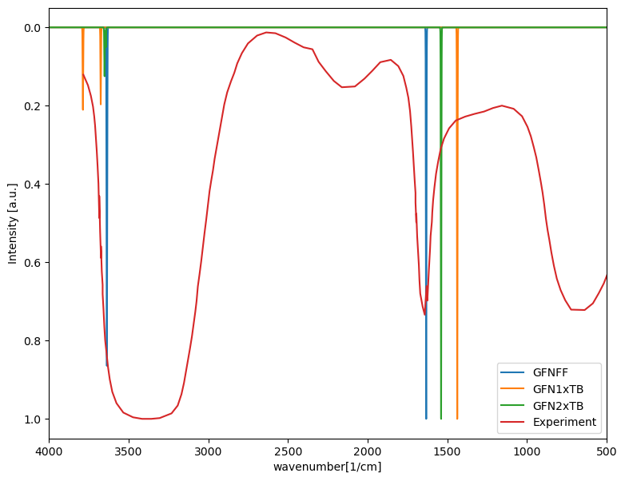
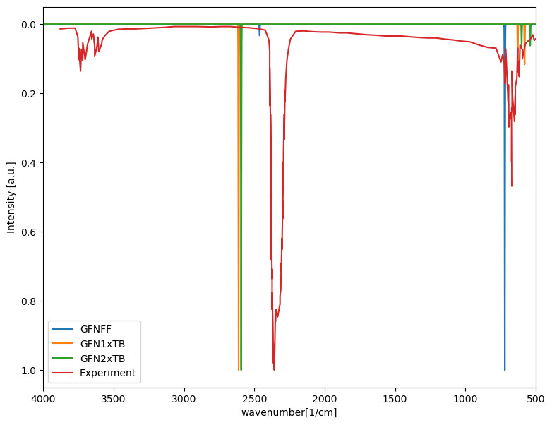

from pylab import *
import json
import glob
import pandas as pd
def LoadData(File):
File_open=open(File)
File_loaded = json.load(File_open)
Dic = {"File": File,
"wavenumbers" : File_loaded['wavenumbers'],
"intensities" : File_loaded['intensities']
}
return Dic
def IR_exp(IR_data):
name = IR_data
file = pd.read_csv(name, delimiter='-',decimal=",")
new_archive = "{0}_2.csv".format(name[0:-4])
headerList = ['wavenumbers', 'intensities']
file.to_csv(new_archive, header=headerList, index=False)
file2 = pd.read_csv(new_archive)
file2.sort_values(by=['wavenumbers'], inplace=True)
new_intensities =[]
for i in file2['intensities']:
new_intensities.append(1-i)
Dic = {"File": name,
"wavenumbers" : file2['wavenumbers'],
"intensities" : new_intensities
}
return Dic
def Normal(data):
new_intensities = []
old_intensities = data["intensities"]
a = max(old_intensities)
for i in old_intensities:
new_intensities.append(i/a)
return new_intensities
\(H_2O\)#
glob.glob('./*.json')
['./id-formula.json',
'./response_1679610558006_CO2_GF2xTB.json',
'./response_1679607003317_H2O_GFN1xTB.json',
'./response_1679611604838_CO2_GFNFF.json',
'./formulas-mpid.json',
'./response_1679611104569_CO2_GFN1xTB.json',
'./ph_ws_material_structure_mp-9900_Ag2GeS3.json',
'./ph_ws_material_structure_mp-866291_AgBr.json',
'./crd.json',
'./response_1679606406055_H2O_GFNFF.json',
'./response_1679607376257_H2O_GFN2xTB.json']
File ='.\\response_1679606406055_H2O_GFNFF.json'
H2_O_GFNFF =LoadData(File)
File ='.\\response_1679607003317_H2O_GFN1xTB.json'
H2_O_GFN1xTB =LoadData(File)
File = '.\\response_1679607376257_H2O_GFN2xTB.json'
H2_O_GFN2xTB =LoadData(File)
File ='.\\H2_O_exp.csv'
H2_O_exp = IR_exp(File)
---------------------------------------------------------------------------
FileNotFoundError Traceback (most recent call last)
Cell In[4], line 2
1 File ='.\\response_1679606406055_H2O_GFNFF.json'
----> 2 H2_O_GFNFF =LoadData(File)
3 File ='.\\response_1679607003317_H2O_GFN1xTB.json'
4 H2_O_GFN1xTB =LoadData(File)
Cell In[2], line 2, in LoadData(File)
1 def LoadData(File):
----> 2 File_open=open(File)
3 File_loaded = json.load(File_open)
4 Dic = {"File": File,
5 "wavenumbers" : File_loaded['wavenumbers'],
6 "intensities" : File_loaded['intensities']
7 }
File ~/psi4conda/envs/jbook/lib/python3.11/site-packages/IPython/core/interactiveshell.py:284, in _modified_open(file, *args, **kwargs)
277 if file in {0, 1, 2}:
278 raise ValueError(
279 f"IPython won't let you open fd={file} by default "
280 "as it is likely to crash IPython. If you know what you are doing, "
281 "you can use builtins' open."
282 )
--> 284 return io_open(file, *args, **kwargs)
FileNotFoundError: [Errno 2] No such file or directory: '.\\response_1679606406055_H2O_GFNFF.json'
fig,ax = plt.subplots(ncols=1,nrows=1,figsize=(9,7))
ax.plot(H2_O_GFNFF['wavenumbers'],Normal(H2_O_GFNFF), label="GFNFF")
ax.plot(H2_O_GFN1xTB['wavenumbers'],Normal(H2_O_GFN1xTB), label="GFN1xTB")
ax.plot(H2_O_GFN2xTB['wavenumbers'],Normal(H2_O_GFN2xTB), label="GFN2xTB")
ax.plot(H2_O_exp['wavenumbers'],Normal(H2_O_exp), label="Experiment")
ax.legend()
ax.set_xlabel("wavenumber[1/cm]")
ax.set_ylabel("Intensity [a.u.]")
ax.set_xlim(500,4000)
ax.invert_yaxis()
ax.invert_xaxis()

\(CO_2\)#
glob.glob('./*.json')
['.\\EtOH_exp.json',
'.\\response_1679440595996_CS2_GFNFF.json',
'.\\response_1679485578314_CS2_GFN1xTB.json',
'.\\response_1679485961310_CS2_GFN2xTB.json',
'.\\response_1679606406055_H2O_GFNFF.json',
'.\\response_1679607003317_H2O_GFN1xTB.json',
'.\\response_1679607376257_H2O_GFN2xTB.json',
'.\\response_1679610558006_CO2_GF2xTB.json',
'.\\response_1679611104569_CO2_GFN1xTB.json',
'.\\response_1679611604838_CO2_GFNFF.json',
'.\\response_1679612847840_Ben_GFNFF.json',
'.\\response_1679613935215_Ben_GFN2xTB.json',
'.\\response_1679614160476_Ben_GFN1xTB.json',
'.\\response_1679659777727_POCl_3_GFN1xTB.json',
'.\\response_1679660569925_POCl_3GFN2xTB.json',
'.\\response_1679660682243_POCl3_GFNFF.json',
'.\\response_1679662150668_EtOH_GFNFF.json',
'.\\response_1679662928012_EtOH_GFN1xTB.json',
'.\\response_1679663134619_EtOH_GFN2xTB.json']
File ='.\\response_1679611604838_CO2_GFNFF.json'
CO_2_GFNFF =LoadData(File)
File ='.\\response_1679611104569_CO2_GFN1xTB.json'
CO_2_GFN1xTB =LoadData(File)
File = '.\\response_1679610558006_CO2_GF2xTB.json'
CO_2_GFN2xTB =LoadData(File)
File ='.\\CO_2.csv'
CO_2_exp = IR_exp(File)
fig,ax = plt.subplots(ncols=1,nrows=1,figsize=(9,7))
ax.plot(CO_2_GFNFF['wavenumbers'],Normal(CO_2_GFNFF), label="GFNFF")
ax.plot(CO_2_GFN1xTB['wavenumbers'],Normal(CO_2_GFN1xTB), label="GFN1xTB")
ax.plot(CO_2_GFN2xTB['wavenumbers'],Normal(CO_2_GFN2xTB), label="GFN2xTB")
ax.plot(CO_2_exp['wavenumbers'],Normal(CO_2_exp), label="Experiment")
ax.legend()
ax.set_xlabel("wavenumber[1/cm]")
ax.set_ylabel("Intensity [a.u.]")
ax.set_xlim(500,4000)
ax.invert_yaxis()
ax.invert_xaxis()
